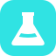

#30E3E3 · 白色几何瓶 · 64 × 64 主源 · 无描边瓶肩过渡平滑，液面以浅弧负形表达；双主题使用同一实心青底。

直颈 → 斜肩 → 宽平底不依赖字母，不以液面细节承担整体辨识。
16 / 32 / 48px 为实际尺寸；像素放大图来自真实 16px PNG，以最近邻放大 8 倍。截图 DPR=1。16px 液面保留约 1px 间隔，浅弧接近直线；弧度在 32px 及以上更明显。